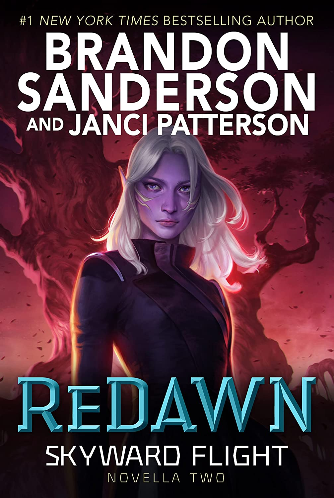

"ReDawn"
- Read on 2024-05-02
- Rating: ️️️️️
- Format: 🎧 (6 hours 57 minutes)
I'd like to rate this one higher, since it feels like it adds SO MUCH context to the series. But that has more to do with my enjoyment of the book in the series, not necessarily for the book as a book. Yes, it's a novella that was added after the fact, but this book shares so many details I doubt they could really cover in the main part of the series. With the novella format, some things are skipped over a little too easily. Some things are hasty. But I loved this addition to the series.
- Prior: The Good Neighbor
- Next: Cytonic